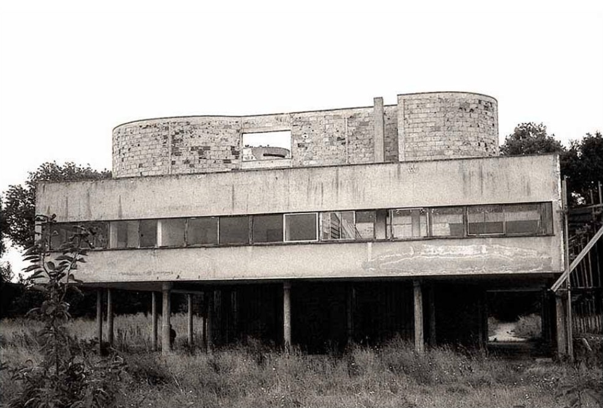
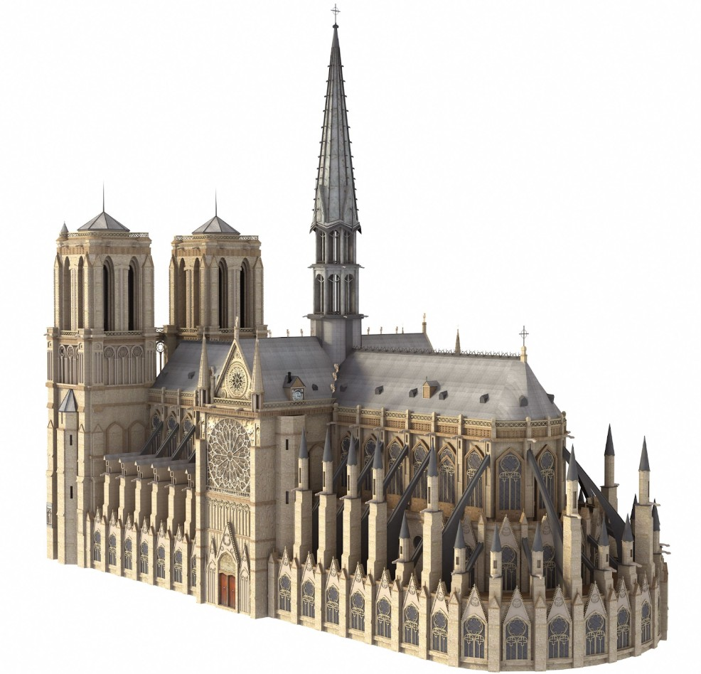

Property Owners
Property Documentation: Maximizing Value Across the Ownership Lifecycle
Our historic buildings serve as vital links to the past, repositories of culture, memory, and architectural inspiration. Despite their importance, these structures face constant threats from rapid development, shifting climate, and time, leading to a quiet crisis where priceless heritage is lost to opportunistic redevelopment, natural disasters, neglect, and well-intentioned but misguided renovation. The destruction of a historic building robs future generations of the opportunity to "touch the past" and experience the invaluable and often irreplaceable legacy of those who came before.
Existing Conditions Documentation (ECD) is the unsung hero of historic preservation. It is not a luxury, but a prudent act of intellectual and cultural preservation, a deliberate effort to capture the total state of a building at a single moment in time. ECD's primary goal is to create an accurate archival record before a structure is fundamentally altered or destroyed, ensuring its essential character, geometry, and story can endure even if the physical building cannot.

Documentation provides critical preparedness against the multifaceted threats to historic structures:
Thorough documentation is an enduring asset that empowers a range of future applications:
Existing Conditions Documentation must adhere to stringent standards, mandating both accurate 3D digital reproduction of the building and comprehensive photographic documentation.
Modern preservation requires a precise, three-dimensional digital replica that captures the building's exact geometry.
Photography captures the qualitative, material, and contextual aspects. This complete visual record includes:

Existing Conditions Documentation is an investment, an insurance policy for our cultural heritage. It is a proactive, technologically advanced approach that ensures that even if a physical building is lost, its essence, its form, materials, and beauty, can be secured in the digital archive. By committing to this exhaustive documentation, we ensure the stories held within our historic buildings are passed on to be cherished by future generations.
Contact us for an Existing Conditions Documentation Quote.
Get in TouchProperty Documentation: Maximizing Value Across the Ownership Lifecycle
Accurate plans and models fast
2D Plans, 3D models and thorough Photo Documentation
Planning for transition, growth and safety with ECD
Efficient, profitable, property operation and management with ECD
ECD: The Blueprint for Flawless Events
Cost Reduction and Risk Mitigation in Construction
An accurate foundation for success in modern landscape architecture
Documenting a landmark, parish property, or adaptive reuse? Discuss capture scope with our team.
Get in TouchA comprehensive list of types of buildings, sites, and campuses Ground Truth 3D has scanned, with links to content where available.
Discuss scope, deliverables, and timeline with our team.
Get in TouchStart with a conversation about your documentation needs.
Get in Touch